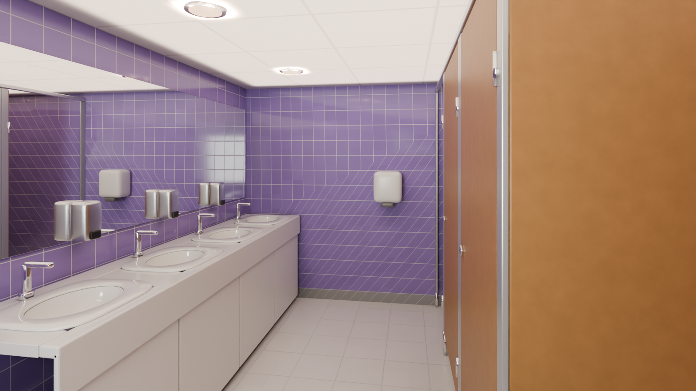
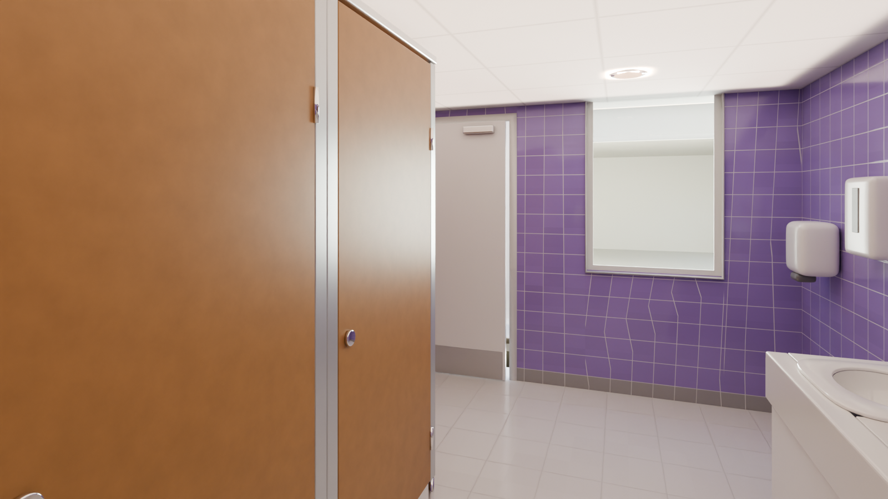

Ladies Washroom — National ICT Innovation Hub
The ladies washroom in the south facade, west of the Reception. Furnished from the 'female wash room' photo: lilac 150 mm glazed tiles floor to ceiling, a white solid-surface vanity with four inset oval basins and chrome sensor taps under a full-length mirror, soap dispensers, a towel dispenser and two hand dryers, three cubicles with oak doors and partitions on aluminium pilasters (one open), light grey 300 floor tiles, round downlights. The photo appears to be a generic stock image, so the room follows its style, laid out at real scale in the model's room.
Zone: X -5.34..-1.77, Y -3.23..+1.28 (clear 3.43 x 4.37 m between the faces), soffit 2.14 m (measured). Each angle: the reference photo (where there is one) and the furnished scene; shell frames are not rendered for this room. The original meshes are untouched; no render contains people.
2 final
Zone check and photo mapping
high confidence - matches the plan box within 0.1 mPlan: 'Ladies Room' label, plan px x 338..425, y 301..410 -> X -5.3..-1.8, Y -3.3..+1.1. Ray casts on the GLB (washroom_gents/scripts/probe_wash.py, probe_out.txt): west face X -5.27, east face X -1.84, north face Y +1.21, south facade Y -3.16 with a door opening X -3.33..-2.48 (head about 2.0 m) and a window X -4.76..-3.96 (sill about 0.9); flat floor 0.00; soffit 2.14 m measured at three points in this room. Photo: vanity left, cubicles right - laid out so, entering from the south door.

| Photo | Where it looks | Angle |
|---|---|---|
| female wash room.jpg | Lilac tiles, vanity with basins and mirror, oak cubicle doors, dryers and dispensers | 01 |
| - | Back toward the door (no photo) | 02 |
From the door along the vanity and the cubicles
photo female wash room/female wash room.jpgLooking north from inside the door: the vanity with its mirror on the left, the oak cubicle doors on the right.
 Photo female wash room/female wash room.jpg
Photo female wash room/female wash room.jpg
FurnishedBack toward the door and the window
photo no matching photoFrom the far end of the vanity, looking south: basins, dryers, the door and the facade window (no matching photo).

FurnishedWhat differs from the photos (ranked)
- Not reviewed yet.
Dropped at real scale
| Item | Why |
|---|---|
| A fifth basin (the photo shows five) | four basins at 0.675 m fill the 2.7 m of west wall north of the dryers at real size |
| Feminine hygiene units, baby-change table | not in the photo |
| Ceiling access panels and vents | too small to read at this scale |
Free camera
Files and last updated
| File | Kind | Size | Modified |
|---|---|---|---|
| 01_vanity_and_cubicles_furnished.png | final | 1.4 MB | 2026-10-05 02:25 |
| 02_back_to_door_furnished.png | final | 1.3 MB | 2026-10-05 02:35 |
| walkbaked/index.html | free-camera page | 47.2 KB | 2026-10-05 00:32 |
Render settings
- Room
- Ladies - X -5.27..-1.84, Y -3.16..+1.21, soffit 2.14 m
- Renderer
- Blender 4.2 LTS, Cycles, CPU only (i5-10505)
- Draft settings
- 1280 x 720, 32 samples, OIDN (finals 1600 x 900, 256 samples)
- Ceiling lights
- 6 round LED downlights, 4300 K; the camera-visible lens is kept below the AgX white point
- Daylight
- Soft panel outside the south facade window, white balanced
- Tone mapping
- AgX, Medium High Contrast, exposure -0.22 (same as the Reception)
- Materials
- Glazed tiles and ceramic with low roughness (reflections), chrome, mirror
- Furniture
- Real scale, nothing shrunk; fixtures bevelled and subdivided
- People
- None, by design